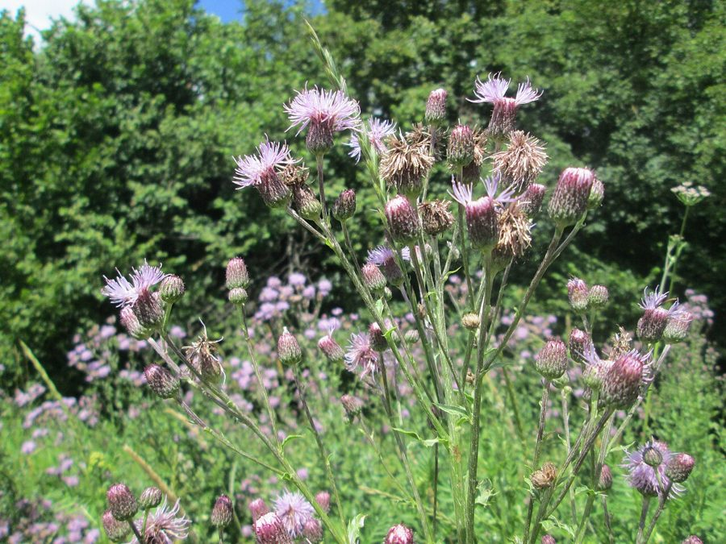

क्रीपिंग थिसलCreeping Thistle
Cirsium arvense · Asteraceae · FLR-0403

- Scientific name वैज्ञानिक नाम
- Cirsium arvense (L.) Scop.
- Family कुल
- Asteraceae
- Hindi हिंदी
- क्रीपिंग थिसल
- Local names स्थानीय नाम
- creeping thistle
- Status here यहाँ की स्थिति
- native
- Movement आवागमन
- Resident, here all year
- Known from कहाँ दर्ज
- Others have published records from the wider Awadh–Purvanchal plain, none yet from Basti–Ayodhya अवध–पूर्वांचल से दूसरों के प्रकाशित अभिलेख, बस्ती–अयोध्या से अभी नहीं
- IUCN IUCN
- not evaluated
- Review समीक्षा
- not yet reviewed
When to look कब देखें
Expected mainly in January, February, March, April, November, December. मुख्यतः जनवरी, फ़रवरी, मार्च, अप्रैल, नवंबर, दिसंबर में अपेक्षित।
Tell it apart from इनसे अलग पहचानें
क्रीपिंग थिसल / Creeping Thistle
Cirsium arvense (L.) Scop. — Asteraceae
क्रीपिंग थिसल — यह खेतों की मेड़ों और परती जमीन पर उगने वाला एक मजबूत और कांटेदार पौधा है। इसकी जड़ें जमीन के भीतर गहराई तक फैलती हैं। इसकी पत्तियाँ किनारों पर तीखे कांटों से भरी होती हैं। इसके ऊपरी हिस्से में हल्के बैंगनी या गुलाबी रंग के सुगंधित फूल खिलते हैं, जिनमें नर और मादा फूल अलग-अलग पौधों पर लगते हैं।
Quick Identification त्वरित पहचान
| Feature | Description |
|---|---|
| Plant habit | Robust erect perennial herb arising from deep creeping horizontal rootstocks |
| Stems | Grooved, unwinged, leafy, cobwebby-tomentose towards the apex |
| Leaves | Sessile, oblong or sinuate-pinnatifid, with sharp stiff marginal spines |
| Sexuality | Dioecious; male and female capitula borne on separate individual plants |
| Flower-heads | Ovoid or globose heads of dull purple or pale lilac tubular florets |
| Fruit | Smooth brownish achenes topped by a dirty-white feathery (plumose) pappus |
Field tip: Look for prickly thistle foliage on unwinged stems forming colonies from creeping roots, with fragrant lilac-purple flower heads.
हिंदी: बिना पंख वाले तने, तीखे कांटों से घिरी पत्तियाँ और अलग-अलग पौधों पर खिलने वाले बैंगनी फूल इसकी पहचान हैं।
Morphology आकारिकी
Measurement not available in consulted sources.
A robust, erect perennial thistle producing dense clonal colonies from extensive creeping roots. Stems erect, leafy, striate, unwinged, simple below, branched above, covered in loose cobwebby tomentum in the upper parts.
Leaves alternate, sessile, dull green, glabrous or scabrid above, pale and white-woolly tomentose beneath; blade oblong to lanceolate, sinuate-lobed or pinnatifid, margins undulate and armed with rigid, pungent, yellowish spines.
Inflorescence consisting of solitary, fascicled or corymbose flower-heads (capitula) at branch tips. Species dioecious; male heads subglobose with short involucral bracts and exserted stamens; female heads larger, oblong-ovoid, with longer florets and prominent styles. Involucral bracts multiseriate, ovate to lanceolate, outer ones short and tipped with small spreading spines, inner ones longer with soft purplish scarious tips. Florets all tubular, dull purple, lilac, or rarely dirty white, sweet-scented.
Achenes oblong, slightly compressed, smooth, shining, pale brown, crowned by a deciduous pappus composed of numerous multiseriate feathery (plumose) hairs united at the base into a ring.
हिंदी: तने मजबूत और रोयेंदार होते हैं। पत्तियों के किनारों पर तीखे पीले कांटे होते हैं। फूल हल्के बैंगनी रंग के और खुशबूदार होते हैं। बीज चिकने और रोयेंदार होते हैं।
Behaviour & Ecology व्यवहार और पारिस्थितिकी
A vigorous perennial herb native to Eurasia and the northern Indian plains. It regenerates both by abundant plumed seeds and by deep subterranean horizontal roots that produce adventitious buds, forming extensive dense patches.
The creeping root system can penetrate deeply into alluvial loam, making the species drought-resistant and capable of surviving seasonal ploughing. The fragrant lilac flowers produce abundant nectar that attracts a wide variety of insect visitors. As a dioecious species, it relies entirely on insect pollinators for cross-pollination between male and female colonies.
हिंदी: यह पौधा जमीन के भीतर अपनी जड़ों से फैलता है और एक बार जमने के बाद इसे निकालना कठिन होता है। इसके फूलों की महक कीटों को आकर्षित करती है।
Life Cycle / Phenology जीवन चक्र
Rootstocks sprout new leafy shoots with the recession of the monsoon from October to November. Vegetative rosette growth expands through December. Upright flowering stems shoot up rapidly in January.
Flowering extends from January to March, during which time male and female plants bloom synchronously. Plumed achenes mature from late February through April, releasing wind-borne seeds that disperse across fields. In the dry heat of May and June, above-ground foliage dies back, but the subterranean root system survives dormant through the summer.
हिंदी: अक्टूबर-नवंबर में जड़ों से नए कल्ले फूटते हैं। जनवरी से मार्च के बीच फूल खिलते हैं और अप्रैल में बीज उड़ते हैं। मई की भीषण गर्मी में तना सूख जाता है पर जड़ें जीवित रहती हैं।
Associated Species / Interactions सहजीवी प्रजातियाँ
The nectar-rich florets are visited by diverse pollinators including honeybees, leafcutter bees, hoverflies, and nymphalid butterflies. Seed-eating birds such as finches and doves feed on the developing achenes.
In field borders, it associates with weeds such as prickly sow thistle, common sowthistle, and parthenium. Spiders weave webs among the spiny bracts to ambush visiting pollinators.
हिंदी: इसके फूलों पर मधुमक्खियाँ, तितलियाँ और छोटी चिड़ियाँ आती हैं। कांटेदार पत्तियों के बीच मकड़ियाँ अपने जाले बनाती हैं।
Pests and Diseases कीट और रोग
Thistle aphids cluster on the upper stem and flower buds in early spring. Thistle stem gall flies and various rust fungi (Puccinia) occasionally attack the foliage, causing distorted leaves and brown pustules.
हिंदी: वसंत ऋतु में तनों पर माहू और पत्तियों पर गेरुई (रस्ट) फफूंद के भूरे धब्बे दिखाई दे सकते हैं।
Agricultural / Human Relevance कृषि प्रासंगिकता
In agricultural lands of northern India, creeping thistle is considered an aggressive and persistent weed. Its spiny leaves deter grazing animals, and its deep subterranean creeping roots make it remarkably difficult to eradicate through ordinary tillage, as severed root fragments regenerate readily into new plants.
हिंदी: यह खेतों का एक हठीला खरपतवार है जिसे जोताई से पूरी तरह खत्म करना मुश्किल होता है। मवेशी इसके कांटों की वजह से इसे नहीं खाते।
Expected Locally स्थानीय रूप से अपेक्षित
Not a field record. Written from published accounts for eastern Uttar Pradesh. No confirmed local sighting yet — if you have seen it, that is what the atlas needs.
अभी तक स्थानीय पुष्टि नहीं। यह विवरण प्रकाशित स्रोतों से है, किसी अवलोकन से नहीं।
Expected along field margins, fallow drylands, railway tracks, canal embankments, and uncultivated scrub borders across Basti, Ayodhya, and neighbouring districts from December through April. GBIF holds published records from the wider Awadh–Purvanchal plain, none yet from Basti–Ayodhya. The first verifiable record from the region will be a dated photograph of flowering plants or a population in a weed habitat or field border with district and coordinates.
हिंदी: बस्ती और अयोध्या में रेलवे लाइन के किनारे, नहर की मेड़ों और परती जमीन पर सर्दियों के दिनों में इसके मिलने की संभावना है।
Distribution वितरण
Global range: Native across Europe, temperate Asia, and northern India; widely naturalized and often invasive across North America, southern Africa, and Australasia.
In India: Native and widespread across the plains of northern India, Punjab, the Gangetic valley, and the western Himalayas up to temperate altitudes.
In Uttar Pradesh: Distributed along the upper and central Gangetic plains, colonizing canal embankments and open fields.
In Basti district / eastern UP: Expected on drier field embankments, fallow tracts, and along transport corridors.
हिंदी: यह पौधा यूरोप और उत्तरी भारत का मूल निवासी है और गंगा के मैदानी इलाकों में मेड़ों और खुली जगहों पर पाया जाता है।
Research Questions शोध प्रश्न
- What is the spatial distribution of male and female colonies of this dioecious thistle in eastern UP agricultural landscapes?
- How deeply do the creeping rootstocks penetrate in the heavy clay-loam alluvial soils of the Ghaghara basin?
- Which native bee species are the most effective cross-pollinators between isolated male and female clones? / अलग-थलग उगे नर और मादा पौधों के बीच परागण कराने में कौन सी देशी मधुमक्खियाँ सबसे सक्षम हैं?
- What mechanical cultivation practices best suppress the regeneration of root fragments in rabi fallows? / रबी की खाली जमीन में जोताई के कौन से तरीके इसकी जड़ों को दोबारा पनपने से रोकते हैं?
- Can a child observe the sweet scent of the purple flower heads on a sunny February afternoon?
हिंदी: क्या नर और मादा पौधे अलग-अलग उगते हैं और इसके कांटों से बचने के लिए किसान क्या उपाय करते हैं?
Similar Species मिलती-जुलती प्रजातियाँ
| Species | How to tell apart | हिंदी | |
|---|---|---|---|
| `[[prickly_sow_thistle\ | Sonchus asper]]` | Annual herb with milky sap; flower heads yellow; stems hollow and unspined | तना खोखला, रस दूधिया और फूल चमकीले पीले होते हैं |
| `[[common_sowthistle\ | Sonchus oleraceus]]` | Annual with thin runcinate leaves, soft teeth, milky latex, and yellow capitula | पत्तियाँ पतली, रस सफेद और फूल पीले होते हैं |
Field rule: Look for perennial creeping roots, tough unwinged stems, spiny leaves without milky sap, and fragrant dull purple or lilac flower-heads.
हिंदी: बिना दूधिया रस वाले तने, तीखे कांटेदार पत्ते और हल्के बैंगनी फूल इसे सॉथिसल से अलग करते हैं।
Taxonomy & Classification वर्गीकरण
Original description. First described as Serratula arvensis by Carl Linnaeus in 1753 in Species Plantarum, volume 2, page 820. Transferred to Cirsium by Giovanni Antonio Scopoli in 1771 in Flora Carniolica, edition 2, volume 2, page 126.
Subspecies. Often treated in older Indian works under the synonym Cnicus arvensis (L.) Hoffm. (Duthie 1905; Hooker 1881). In India, populations belong to the typical variety.
Family and order placement. Placed in family Asteraceae (subfamily Carduoideae, tribe Cardueae), order Asterales. It belongs to the true thistle tribe characterized by spiny involucres and plumose pappus hairs.
Phylogenetic notes. Distinct from Carduus by its feathery plumose pappus hairs (which are simple in Carduus).
IUCN status rationale. Not evaluated by the IUCN Red List. It is an extremely widespread, abundant, and aggressive weed with no conservation concern.
हिंदी: यह एस्टरेसी कुल के कार्डुई जनजाति का सदस्य है। स्कोपोली ने 1771 में इसे सिरसियम जीनस में रखा था।
Photo Gallery फोटो गैलरी
No photos yet — add field photos to media/species/creeping_thistle/ and run node scripts/sync_photos.js.
Photos needed आवश्यक फोटो
- [ ] Clonal patch showing spiny foliage along a field margin (मेड़ पर कांटेदार पत्तियों का झुंड)
- [ ] Flowering capitulum with lilac florets (बैंगनी फूलों वाला सिरा)
- [ ] Feathery plumose pappus on mature seeds (रोयेंदार पंखों वाले पके बीज)
References संदर्भ
- Scopoli, J. A. (1771). Flora Carniolica, ed. 2, vol. 2, p. 126.
- Linnaeus, C. (1753). Species Plantarum, vol. 2, p. 820.
- Duthie, J. F. (1905). Flora of the Upper Gangetic Plain and of the Adjacent Siwalik and Sub-Himalayan Tracts, vol. 1, part 2, p. 481. (as Cnicus arvensis)
- Hooker, J. D. (1881). The Flora of British India, vol. 3, p. 362. (as Cnicus arvensis)
- Chopra, R. N., Nayar, S. L. & Chopra, I. C. (1956). Glossary of Indian Medicinal Plants, Council of Scientific and Industrial Research, New Delhi, p. 71.
- GBIF Occurrence Data — Cirsium arvense, India (2025).
Source file: species/flora/weeds/creeping_thistle.md